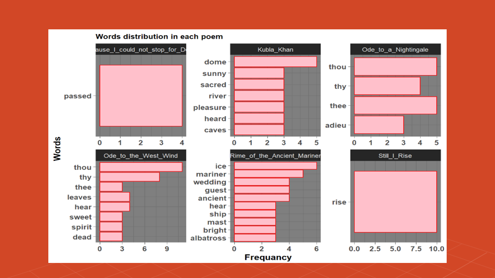
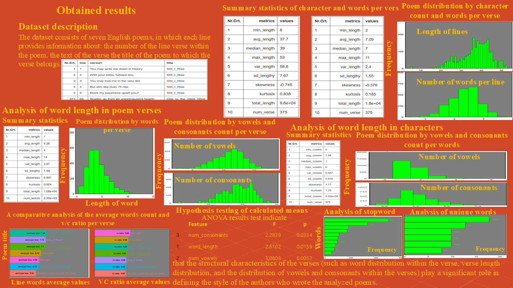
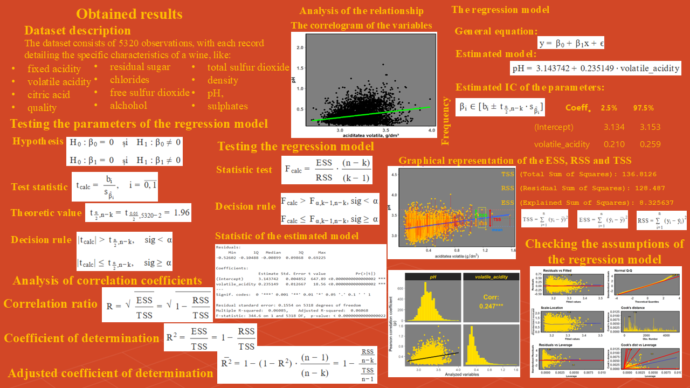
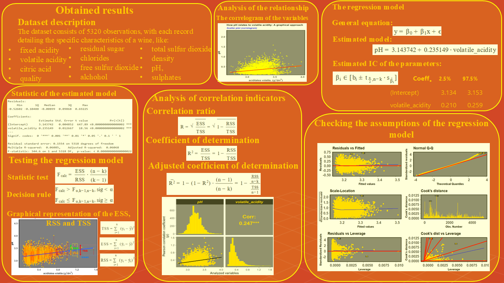
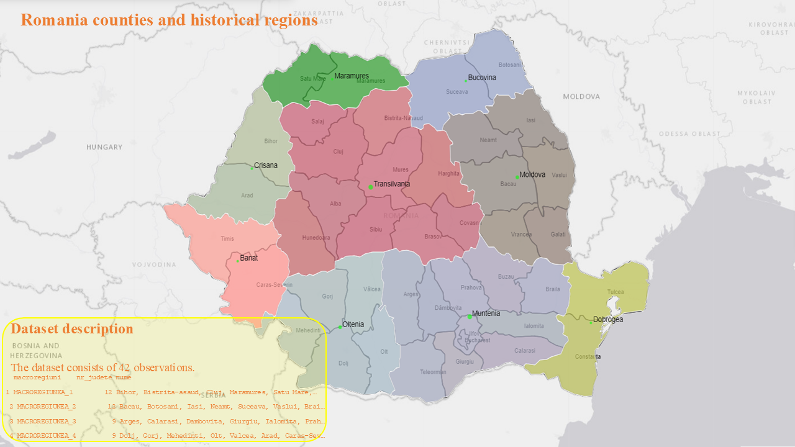
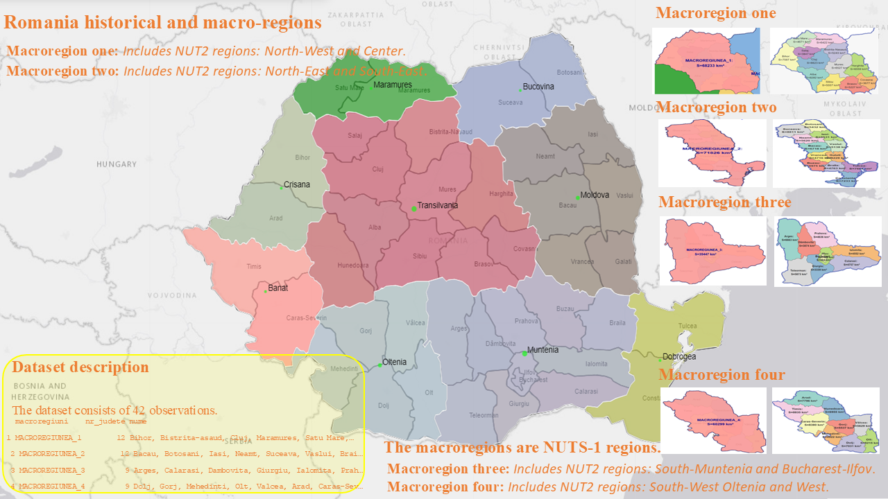
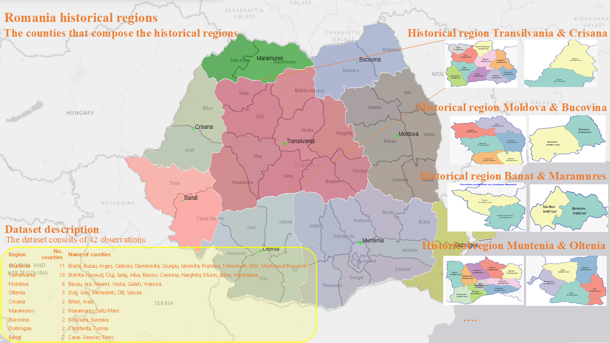

Site-ul reunește proiecte de analiză a datelor realizate în R și publicate pe RPubs, incluzând vizualizări, modele statistice și interpretări ale datelor.
In this study, we will implement methods such as Natural Language Processing (NLP) to perform text analytics and visualization.
Detalii proiect
In this study, we analyze if the structural characteristics of the verses (such as word distribution within the verse, verse length distribution, and the distribution of vowels and consonants within the verses) play a significant role in defining the style of the authors who wrote the analyzed poems.
Detalii proiect
The objective of this paper is to identify and estimate the functional relationship between pH and alcohol variables. The dataset utilized is the 'Wine Quality' dataset, available on UCI (University of California Irvine) Machine Learning Repository website. Furthermore, we will estimate the correlation indicators and test the parameters of the model generated using these two variables.
Detalii proiect
The objective of this study is to identify and estimate the functional relationship between pH and alcohol variables. The dataset utilized is the 'Wine Quality' dataset. Furthermore, we will estimate the correlation indicators and test the parameters of the model generated using these two variables.
Detalii proiect
This study analyzes data on the size and structure of the Romanian population from 1969 to 1991 and 1992 to 2024. The data, covering the entire Romanian territory, was retrieved from the National Institute of Statistics (NIS) platform.
Detalii proiect
This study analyzes data on the size of the Romanian population from 1969 to 1991 and 1992 to 2024. The data, covering the entire Romanian territory, was retrieved from different R packages. The surfaces of counties, macroregions, development regions, and historical regions were calculated based on information available in the rnaturalearth package (which contains a column with estimated areas) and the sf package. Shapefiles are available and can be utilized to graphically represent the territorial borders of a country, county, or other administrative units. Furthermore, the JavaScript library adapted for use in R and utilized to visualize maps, markers, and polygons is the leaflet package.
Detalii proiect
This study analyzes data on the size of the Romanian population. The data, covering the entire Romanian territory, was retrieved from different R packages. The surfaces of counties, macroregions, development regions, and historical regions were calculated based on information available in the rnaturalearth package (which contains a column with estimated areas) and the sf package. Shapefiles are available and can be utilized to graphically represent the territorial borders of a country, county, or other administrative units. Furthermore, the JavaScript library adapted for use in R and utilized to visualize maps, markers, and polygons is the leaflet package.
Detalii proiect
Proiecte publicate pe RPubs
Seturi de date
Vizualizări
Ani experiență
GitHub | RPubs | LinkedIn